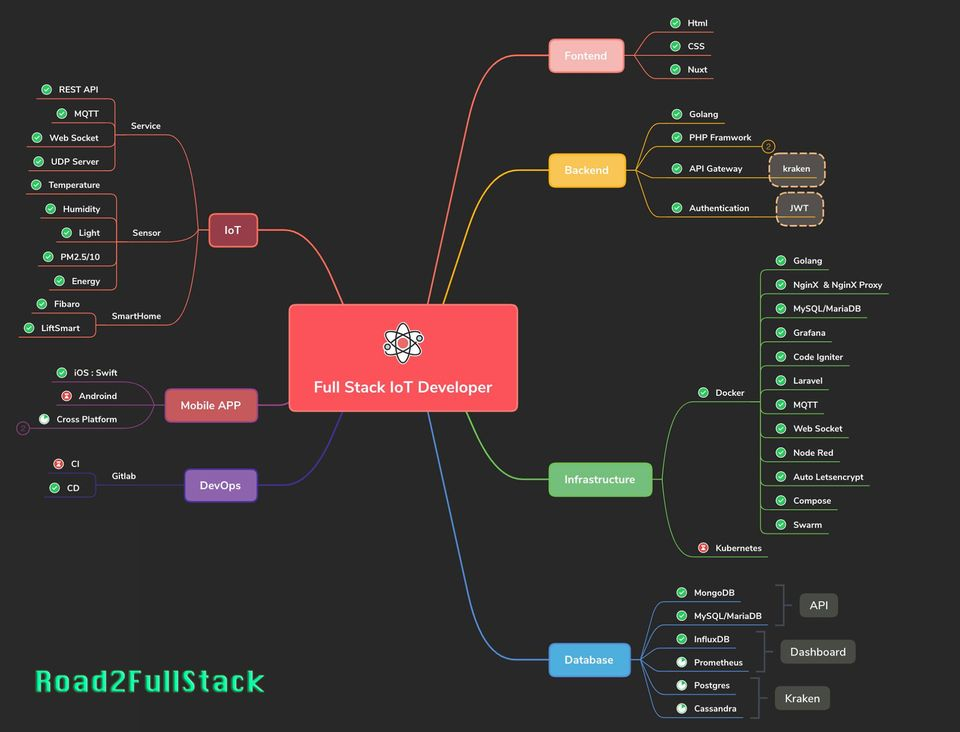

Full Stack IoT Development
IoT Development landscape

Handling Sensor Data in IoT
Effectively managing sensor data in IoT applications is essential for making informed decisions, optimizing performance, and ensuring data reliability. This guide covers key approaches and techniques for handling sensor data in IoT.
1. Data Collection and Sampling
- Sampling Frequency: Choose an appropriate sampling rate based on sensor type and application needs. Higher frequencies capture more detail but consume more resources; lower frequencies save power but may miss rapid changes.
- Data Preprocessing: Apply basic processing to clean up raw data, which can include removing outliers or applying filters.
2. Data Filtering Techniques
- Noise Reduction: Sensors often produce noisy data due to environmental factors. Use filters to smooth data:
- Moving Average Filter: Averages a window of data points to smooth out fluctuations.
- Median Filter: Sorts data in a window and selects the median, effectively removing outliers without blurring sharp changes.
- Weighted Moving Average: Uses a weighted sum, giving more importance to recent data to balance noise reduction with sensitivity.
- Mean Filtering: Similar to averaging but may incorporate additional statistical measures to further refine data quality.
3. Data Compression and Reduction
- Event-Driven Sampling: Collect and transmit data only when conditions or thresholds are met, reducing data volume.
- Aggregation: Average, sum, or combine data from multiple sources or over a period to reduce the amount of data without losing key information.
- Delta Encoding: Send only the change in data since the last transmission, useful for slow-changing metrics.
4. Data Storage and Organization
- Time Series Databases: Use specialized databases like InfluxDB or TimescaleDB for storing time-stamped data.
- Edge Storage: Store recent data locally on the device or an edge server to handle intermittent connectivity issues or enable local processing.
5. Data Transmission Protocols
- MQTT: A lightweight, publish-subscribe protocol suitable for IoT due to low bandwidth usage and efficient message handling.
- HTTP/HTTPS: Useful for web-based IoT applications but more resource-intensive than MQTT.
- CoAP (Constrained Application Protocol): Optimized for low-power devices, using less bandwidth and power than HTTP.
6. Data Processing and Analysis
- Real-Time Processing: Analyze data as it arrives for immediate insights, such as anomaly detection.
- Batch Processing: Process data in batches at scheduled intervals for resource-intensive analysis like pattern recognition.
- Machine Learning Models: Deploy ML models for advanced analysis, such as predictive maintenance, anomaly detection, or trend prediction.
7. Security and Privacy
- Data Encryption: Encrypt data both in transit and at rest to protect sensitive information.
- Access Control: Limit access to sensor data to authorized users and systems.
- Anonymization: Anonymize data to protect user privacy, especially for applications handling personal or location data.
8. Data Visualization and Insights
- Dashboards: Use platforms like Grafana or ThingsBoard to visualize sensor data in real-time for easy monitoring.
- Alerts and Notifications: Set up alerts for threshold breaches or unusual patterns in data to enable timely responses to critical events.
Summary
Handling IoT sensor data effectively involves careful planning across data collection, filtering, compression, transmission, processing, and security. By choosing appropriate techniques for each stage, you can ensure high data quality, efficient resource usage, and valuable insights from sensor networks.